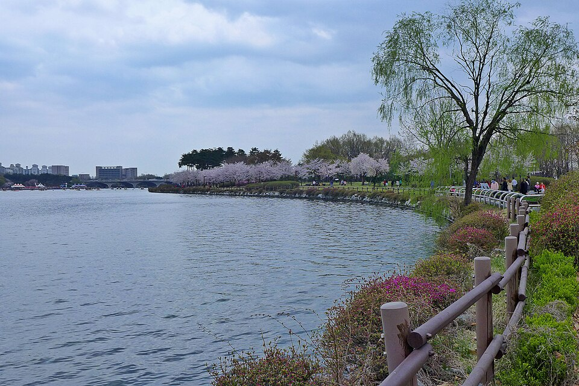

일산동구는 백석동·마두동·정발산동·풍동·식사동이 한 구 안에 있지만, 생활권은 지하철 한 정거장마다 갈립니다. 백석중(백석중학교)·저동중(저동중학교)·중산중(중산중학교)·풍동중(풍동중학교) 같은 중학교와 저동고(저동고등학교)·백마고(백마고등학교)·중산고(중산고등학교)·안곡고(안곡고등학교)가 서로 다른 동네에 흩어져 있어, 학원가가 가까운 집과 그렇지 않은 집의 저녁 시간이 완전히 다릅니다. 이동에 한 시간이 묶이는 학생이라면 집으로 오는 1:1 중등 국어과외나 고등 수학과외를 따로 찾게 됩니다.
오늘은 일산동구로 직접 찾아가는 선생님들 가운데 맡는 과목이 서로 다른 두 분을 소개합니다. 한 분은 국어와 사회를 보는 선생님, 한 분은 수학을 고3 이과 과정까지 보는 선생님입니다. 두 분 다 방문과 화상을 모두 진행합니다.
일산동구에서 중등 국어과외 문의가 들어오는 시점은 대개 중2 2학기입니다. 중1까지는 수업에서 배운 작품이 그대로 나오니 외우면 됐는데, 지문이 길어지면서 "읽었는데 무슨 말인지 모르겠다"가 시작됩니다. 이 선생님을 소개하는 이유는 읽기 자체를 먼저 보는 쪽이기 때문입니다. 문제 풀이부터 들어가지 않고 어휘와 문해력에서 비는 자리를 확인한 뒤 범위를 정합니다.
국어와 사회를 한 사람이 같이 본다는 점도 큽니다. 사회에서 막히는 이유가 개념이 아니라 자료와 선택지를 읽는 방식인 경우가 많은데, 두 과목을 같은 선생님이 보면 그 지점을 따로 설명할 필요가 없습니다. 문학과 비문학 어느 한쪽에 치우치지 않고, 설명이 한 번에 닿지 않으면 다시 풀어 설명하는 방식이라 혼자 읽는 것이 아직 버거운 학생에게 맞습니다. 검정고시를 준비하는 학생도 지도합니다. 일산서구와 마포구를 함께 다니기 때문에 이사나 전학이 있어도 수업을 이어 가기 쉽습니다.
신ㅇ준 선생님 상세 프로필 →일산동구에서 고등 수학과외를 따로 찾는 이유는 대개 중3에서 고1로 넘어가는 자리입니다. 중학교까지는 따라갔는데 고등학교 첫 시험에서 한 번 밀리면 그 뒤로는 진도에 끌려다니게 됩니다. 이 선생님을 소개하는 이유는 초등 고학년부터 고3 이과 과정까지 한 사람이 이어서 볼 수 있기 때문입니다. 학년이 바뀔 때마다 선생님을 바꾸면 그동안 무엇을 건너뛰었는지 매번 다시 설명해야 하는데, 그 과정이 생략됩니다.
학교에 강의를 나가고 대학생 멘토링을 지도한 경험이 있어, 같은 단원에서 학생마다 다르게 막히는 지점을 설명하는 데 익숙합니다. 일본어와 중국어 자격을 갖고 있고 해외에서 공부한 경험이 있어, 유학을 생각하는 집이라면 수학 수업과 별개로 상담을 받아 볼 수 있습니다. 방문 지역이 일산동구 한 곳이라 백석동 쪽은 시간대 잡기가 비교적 수월한 편입니다.
안ㅇ성 선생님 상세 프로필 →학교마다 진도와 시험 범위가 달라서, 학교별로 준비법을 따로 정리해 두었습니다.
관련 검색어: 일산동구국어과외 · 일산동구수학과외 · 백석동수학과외 · 백석중내신 · 저동고내신
👉 일산동구 국어과외 선생님 · 일산동구 수학과외 선생님 · 일산동구 관리 학교 전체 보기